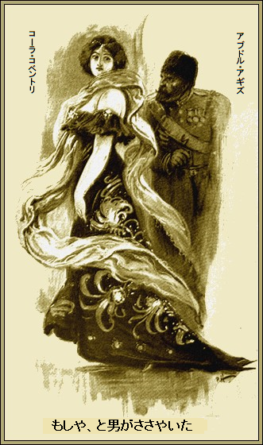
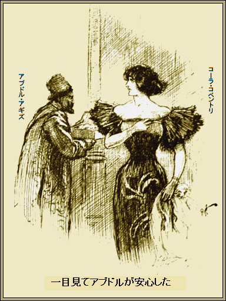

第一章
「女王だったらなあ」
とコーラ・コベントリがのたまった。
唯一の聞き手の男がほほ笑んだ。コーラの
コーラ・コベントリは魅惑的な謎に満ちている。少なくとも魅力はド派手な格好のせいじゃない。たぶん、しっとり濡れた黒い瞳のなせるわざだろうが、出生地は口をはばかった。
おそらくこれ以上の
民衆の見るところ、コーラの
リンドン卿が鼻から
「女王だったら何が欲しい」
「今年だけよ。わたし素敵なものに目がないでしょ。今年は
「そんな気持ちとは知らなかったな。コーラ、なにか隠し事をしてないか」
「たぶんね。むかし男がいたの。何年も会っていないけど」
「恋か、これは驚いた。全部話してごらん」
コーラが笑った。ランプ笠の真っ赤な色が頬に当たった。
「そんなんじゃないわ。もう会ってないもの。あの人なら喜ぶことをやってくれる。ああ、男の中の男ね」
「コーラ、どういうこと」
「あなたのやることよ。いつ
「宮殿にはないよ。知っての通り、
「アブドル・アギズ大公が衣装を預かっている
「その通り。外交官風に言えば、立場は極めて危うい。任務を行わず帰国すれば、ボスポラス海峡に永久に沈められよう。やつは失敗するはず」
コーラは興味津津だ。貴重な美しいものに目がない。この世の織物の中で、問題の衣装というか、ショールほど奇怪な歴史を持つものはない。
確かに、素晴らしい職人
見事な色彩は
この数
そして今、女王は
こんな
「嫌がらせするために話したんでしょ。罰として部屋から出て行きなさい。さあ行って」
リンドン卿が退出した。愛らしくて金のかかる女を一晩たっぷり鑑賞した。美貌に飽き、煙草にも飽きて、審美眼が滅入った。
＊
リンドン卿が去った直後、玄関のベルが鳴った。
「会わないよ、誰にも」
とコーラが召使いに言った。
だが遅かった。もう男が部屋に入って、冷たく言った。
「コーラ、しばらくだな。召使いは出せ」
コーラが妙に声を落として言った。
「召使いは出て行きなさい。あーら、ポールじゃないの」
男が求愛するかのようにほほ笑んだ。クッション付きの椅子に深々と腰を下ろし、あたかも我が家という態度だ。
顔立ちはきれいな少年のようで、青い両眼が火花のようにキラキラだ。さしあたりポール・チャファと称しているが、本当の名前はフィリックス・グライドだった。
「コーラ、会えて嬉しいかい」
コーラが相変わらず抑えた声で応じた。
「嬉しいわ、とても。でも、いつも驚かして。なぜなの」
「きみの師匠だからさ。実際、我々はすごいぞ。二人なら何でもできる」
「なら、どうして一緒に暮らして組まないの」
「俺の家訓は自分以外誰も信用するなだ。でも、きみが俺を手助けして、俺がきみを手助けするなら、お礼に一万ポンド払うぞ、コーラ」
「お師匠さんの究極の目的は何なの」
「教えよう。みんな知ってるけど、あの素晴らしいクレオパトラの衣装だよ。トルコ皇帝が送って拒絶されたブツだ。それをいただく」
コーラが笑った。あざ笑ったわけじゃない。ただ面白かっただけだし、大胆な申し出は大歓迎だ。この企ては充分成功すると当てがあってのことだろう。すっかりこの男の手玉に取られていたが、男のことは何も知らなかった。
本名がポール・チャファという言い分も信用ならない。男は気ままに往来した。男の目的や行動はあきれるほど知らなかった。そして今、何カ月も間を置いて戻って来て、今まで以上に
「奇妙な一致ね。手に入れるためなら何でもするわ」
「でもきみには不可能だ」
「あなたもよ。でもこの件ならわたし手先になるわよ」
「時給三千ポンドくらいだ、いい金だろ、コーラ。ペルシャならあの
「わたし火中の栗を拾うわよ」
「美人に、指をヤケドさせるなんて絶対させないよ。いいか、コーラ、俺が口にしたら、成功したも同然だよ」
コーラがうなずいた。ため息が赤い唇からホッと漏れた。自分の意思に反するかのように答えた。
「いいわ。それで計画は」
「あとだ。俺がどこにいたか、さっき聞いたろ。何カ月もペラのアドリアノープルにいたんだ。織物を学んでいた。これを見ろ」
そういいながら、グライドが上着ポケットから幾重にも折り畳んだ小さな四角い織物を取りだした。器用に腕を振ると、魔法のように得も言われぬ美しいものが広がった。コーラが驚いて飛びつき、叫んだ。
「まあ、すごいじゃない。こんな見事な色やぼかしは見たことがない。見て、ポール」
薄手の派手な織物を取って、優美な体に巻き付けた。古代のナイル蛇ですら、これ以上の魅惑はなかったろう。
「ポール、あんたってすごい。これがクレオパトラの衣装ね」
「いや。ただの複製だよ。ペラのシリア人古老がそう言った。これを手に入れるためにどれほど骨を折って金を使ったか。かの地の優秀な織り子が本物の技術を復活させた。古老の話では先祖の一人から製造秘密を教えてもらったそうだ。そしてこっそり複製した。歴史的な価値を別にすれば、どっちも貴重だよ」
「太陽の輝きが閉じ込められている。こ、これを私に？」
グライドが笑って首を左右に振って言った。
「いや、それは壮大な計画の一部だ。欧州の一番汚い所でイスラム教徒として何週間も暮らし、全てを捨て、アホなことをしてたわけじゃない。コーラ、木曜日にコベント・ガーデン仮装舞踏会へ行ってくれないか」
コーラがうなずいた。会話の内容が突然変わっても驚かなかった。ずっと手放したくないかのようにまばゆい織物を触っていた。
グライドがコーラの心を手に取るように読んだ。
「よければ木曜日の夜まで持ってていいよ。当日の夜が来たら隠して持ってきなさい。時が来たら細かく指示する。明日の夜は夕食会で、俺の友達を楽しませてくれ」
「そうするわ。ほかに約束があったけど延期する。カモは誰なの、お友達のことよ、誰がここへ来るの」
グライドが立ち上がって、煙草に火をつけた。唇に薄笑いを浮かべた。コーラはグライドの笑顔が好きだ。グライドが人間である証拠は笑顔だけだとか。
「名前は？」
とコーラがしつこく
グライドがさらっと言った。
「アブドル・アギズ大公だよ。おやすみ、かわい子ちゃん」
第二章
男の守りが一番弱い所は一番強い所、つまり一般人はほとんど知らないが、偉大な男でさえバカなことをするということである。確かにアブドル・アギズ大公はトルコ支配階級の中でも
アブドル・アギズ大公は詩人の気風があり、それがために女性にひどく心がときめいた。以前、英国に二年間滞在して大いに楽しんだから、言葉や習慣に不自由しなかった。
そればかりか現在の任務についてから、ほどなくしてコーラ・コベントリに魂を吸い取られることになる。グライドが紹介を申し出ると、早速食いついた。
約束の夜、グライドはアブドル・アギズ大公のホテルに立ち寄った。大公の部屋にはもう何回もお邪魔している。高価な衣装の隠し場所や、随員の警戒ぶりは確認済みだ。大公がグライドを迎えて開口一番、
「キミは約束したよな、かわいい女性を」
「はい、コベントリ夫人です。未亡人じゃないですよ、お察しと思いますが。夫は有名な東洋学者の外交官で、いま東洋から帰る道中です。実際いつ帰ってくるかもしれません。来週は
「それじゃ、ご夫人も東洋に通じておられるな」
「とんでもない。なんかの理由があって、それにはお触れになりません。妙な話ですが、お気に入りの召使いはペルシャ人で、英国に
＊
やがて、馬車を降りて、グライドとアブドル大公は花々やシダを飾ったコーラ・コベントリ家の玄関に着いた。その時、典型的な東洋人が床を横切って消えた。
「故郷のようだ」
とアブドル・アギズ大公がつぶやいた。
薄明かりの居間でコーラが出迎えた。アブドル大公は女の大きな濡れた瞳に、クラクラっと白日夢を感じ、しばらく息が出来ず、腰が抜けた気がした。コーラが男の魂を奪って、おもちゃのようにもてあそんでいる。グライドは何もしゃべらず、離れた席で自作劇を見守っていた。蛇と鳥のゲームは面白い。
それから三人で夕食した。おそらく言うまでもなく、アブドル大公は酒を勧められて飲んだことだろう。次第に何をしたか記憶が失くなった。すべてが詩的な夢だった。
コーラがやっと立ち上がった。アブドル大公の黒い瞳がうっとりあとを追った。ぼーっとしていると、グライドが居間へ行こうと誘った。アブドル大公も心底、煙草とコーヒーが欲しかった。だが豪華なバラには、とげが一つあった。グライドが邪魔だった。
アブドル大公がそんなことをふと思った直後、召使いが入室して、お盆に一通の電報を置いて、グライドに渡した。グライドがそれを読んで、いらついた。
「残念ながら行かねばなりません。命令ですから」
気のせいかコーランの一節がアブドル大公の口から出た。次の楽園が舞い込んだのはコーラがアブドル大公を引きとめた時だ。グライドは行くけど、あなたは行かなくてもとコーラが言う。グライドもオウム返しに同調した。
そのあと、アブドル・アギズ大公の人生のなかで、最高に夢心地の楽しい時が過ぎた。
コーラが全魅力を降り注いだ。ささやきは絹のよう、髪一本でひとを
何か約束したなあ。なんだっけ。バラ色のもつれたひだから夢がゆっくりほぐれ始めた。何て魅力的な音楽だったろう。何て素敵な瞳だったろう。
そう、やっと正気に戻った。コーラに破廉恥なことをそそのかした。コベント・ガーデンで行われる木曜日の仮装舞踏会に、お忍びで来てくれ。衣装も細かく指示した。仮面を取って、それから……。
頭に血が上り、手足が妙に軽かった。星々が舞い降りて、コーラがささやいた気がした。コーラとの一日に値するのは中国の六十年、いや国はどこでもよい。コンスタンチノープルや、トルコ皇帝の怒り、失敗の危険はバラ色の霞に隠れてしまった。
「行くべきじゃない。行かないぞ。確かにあんな女はいないし、俺も未経験じゃないし。さんざんキスしたり、されたりしたものだ……。誰が知るか、俺以外……。しょせんたわ言だ。俺は木曜日までだし、それ以降は土くれか、廃人だ」
これらのすべてが証明していることはアブドル・アギズ大公がすっかり、いかれてしまったことだ。
＊
それでもみな完璧で、大方の衣装はすごく凝っていた。馴染みの顔触れが特別席に陣取り、少数派の人々は隅にかたまっている。
半ば隠れて、上背のある優雅な女性が、黒いドレスに鮮やかな白斑を散らした衣装で、誰かを待っているかのようだ。顔を
やがて、女のそばをやや切れ目の外国人が通った。この男も誰かを待ってるかのようだ。カササギの姿を見てびっくり。外見の冷静さとは別に、指先までぞくぞくした。
「もしや」
と男がためらいがちにささやいた。

コーラがにっこり。なでるように、指をアブドル大公の腕に
「見放されたかと思ったわ、踊らない？」
ああ悲しいかな、この件アブドル大公は
きれいな歯を見せ、輝くような笑顔で、言った。
「うんざりだわ、あなた元気ね、さあ、あとで時間を造って、たぶん……」
アブドル大公が了解、いやそう思ったのであるが、結局同じことだ。真っ赤な唇の甘いお宝がやがて自分のものになるかもしれない。
夕食は貴重な時間の浪費に過ぎなかった。コーラは談笑し、アブドル大公が聞き役だ。
「楽しくないの？ 参加してよ、あなたも。あっ」
言葉が凍りついたようで、両眼が恐怖に満ちている。コーラは人か物かに金縛りになった。
「どうされました？」
とアブドル大公が尋ねた。
「ああ、男が、あの大男よ、怖い顔して、一人で食べている。
「あの男ですね。どうして怖いのですか」
「一大事ですわ。夫ですの」
アブドル大公が驚いた。やばいことになりそうだ。
「突然のお帰りですか」
とアブドル大公が気落ちして言った。
「ええ、それが取り柄ですの。一人でこんな所へ来たことが夫のジャスパーに知れたら、殺されます。それにあらぬことを疑われかねません。やきもちと言ったらありゃしないのよ。このドレスも知っているし」
「向うの扉から出られますよ。馬車を用意しますから」
「入口で夫の仲間に見つかるわ。そうでしょ。夫の嫉妬と言ったら病気ですの。でもここから出なくては」
ブルブル震え、コーラが立ち上がり、夕食会場から出ると、アブドル大公が追った。ちらと後ろを振り向くと、嫉妬男は何も気づいていない。奥まった隅はキラキラの照明に比べてとても暗い。そこにコーラが震えて座りこんだ。
「何かお手伝いできることは？」
とアブドル大公が尋ねた。
コーラが短く静止した。
「しっ、いま考えてるの。いい方法を考え付いたわ。あなたの召使いがいるでしょ。召使いなしでは出かけないでしょ」
「忠実なアッサンが下の玄関に控えております」
「すぐ呼んできて。ご迷惑はおかけしません。解決方法を教えます。行って」
アブドル大公が向かった。しばらくして戻り、召使いのアッサンを連れてきた。
「変装するから召使いに取りに行かせて。でも召使いは英語が分からないし、私はトルコ語が書けません。代わりに書いてくれませんか。ペンと紙があります？ よかった。すぐ書いて」
コーラが次のように言った。
「事情があって、自分の衣装を取りにいけませんでしょ。つべこべ言わず、召使いにすぐ私の衣装箱を取りに行かせなさい。部屋の金庫棚の二段目にあります。着替え次第、あなたと出ます」
「それだけ？」
とアブドル大公が
コーラが意味深に言った。
「それで充分です。もしやって下さらなければ、どうなるか知りませんよ。紙をよこして、早く」
アブドル大公の手から紙をひっつかんで、召使いに渡した。その時かがんで、召使いの耳に何事か現地語でささやいた。トルコ語はそれしか知らず、用意周到に練習した言葉だった。
「大公のホテル、ベン・アリホテルへすぐ行きなさい」
アブドル大公には聞こえなかった。召使いを引きとめようとせず、すぐに行かせた。召使いはここへ戻って来るはずだ。
「もう怖くないですか」
とアブドル大公が
「ええ。脱出方法はお分かりですね。夫が私を疑っても、変装すればそばを堂々と通れます。あなたがいなかったら、脱出できなかったでしょうね」
「お礼に何をくださいますか」
とアブドル大公が尋ねた。
コーラが首を後ろに傾けて官能的にほほ笑んだ。四十五分経過、召使いが帰って来る頃だ。その時コーラの目が輝いた。召使いのアッサンがきらめく仮装舞踏会の中を縫って進むのが見えたからだ。
「民間人ですから、成果でお払いします。請求書を送っていただければ払います。ああ来たわ」
アッサンが進み出て、汚い平箱を差し出した。コーラが箱をひったくるように受け取り、退出を命じた。すぐ箱を開けた。中に半透明の見事な織物があった。
「私のじゃないわ。なんてことをしてくれるの、バカ」
アブドル大公が素早く謎を解き、ひどく動揺して
「すみません、召使いが間違えました。あなたの言われた住所が理解できなかったのです。メモを部下に渡したら、クレオパトラの衣装を持ってきたのです。当然の間違いです。どうかそれを私に返してください、すぐ」
コーラが
「いやよ、私に触ってごらん、大声を出すわよ。私を脅すの？ 命と名声が危険にさらされている時に」
「しかし私のご主人のトルコ皇帝が」
「皇帝の衣装なの？ ああ、分かったわ。新聞で読んだ。そんな衣装に一銭も払う気はない。でも、玄関までの守り神です。バカね、ついて来て、すべてうまくいくわよ」
アブドル大公がしょぼんとついてきた。閃光のようにコーラが玄関へ急いだ。
「私に一台馬車を呼んで。あなたの馬車は先に出発して、私の家の近くの角で止めて。私の馬車もついてくるから。そこで、この派手な衣装は返すわ。箱をちょうだい」
とコーラがアブドル大公に言った。
アブドル大公が従った。次の二十分はとても
まず、ドレスの胸元からクレオパトラ衣装の
「はいこれ。大騒ぎすることなかったわね、結局。うまく変装できたお礼を言わなくては。迷惑かけたわ。お手数でも、ランプの下で箱を開けて、盗まれてないことを確かめて」
一目見てアブドル大公が安心した。再び顔を上げたとき、もうコーラの姿はなかった。

「待ってください。いつ会えますか。私は……」
だが通用扉の
＊
ややあってコーラがグライドと向かい合った。
「ほうら、あなたの指示通り、正確にトルコ語で言えたでしょう。貴重な遺産は手に入れたし、アブドル大公は安心して戻ったし。もし、ばれたら？」
「ばれっこないさ。
「でもペルシャ側が勝利して取り戻したら？」
「勝てないさ。東洋の考えは我々と違う。単に物を持っているだけで満足し、自慢しない。東洋の男はしみったれ
「その衣装で金儲けするの」
「五十万ポンドぐらいかな。ただし、売却する際に、やつらが喉を欠き切るなどという無用なトラブルを起こさなければな。だが、この手のものなら大歓迎するよ」
「あんたってすごい」
とコーラが感心しきり。
グライドが笑って、立ち上がって言った。
「その通りさ。さて、退去するか、嫉妬深い旦那と鉢合わせしないように……。お休み、コーラ」
「お休みなさい。でもあした会えるんでしょう？」
「残念だが、朝早くテヘランへ出発する。でもその前に、分け前は必ず送るよ」
了